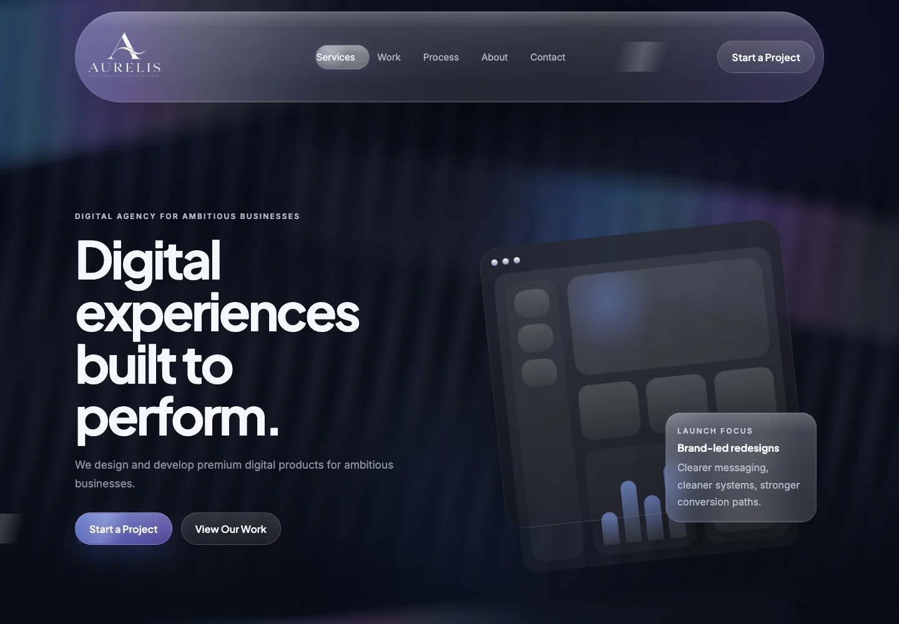
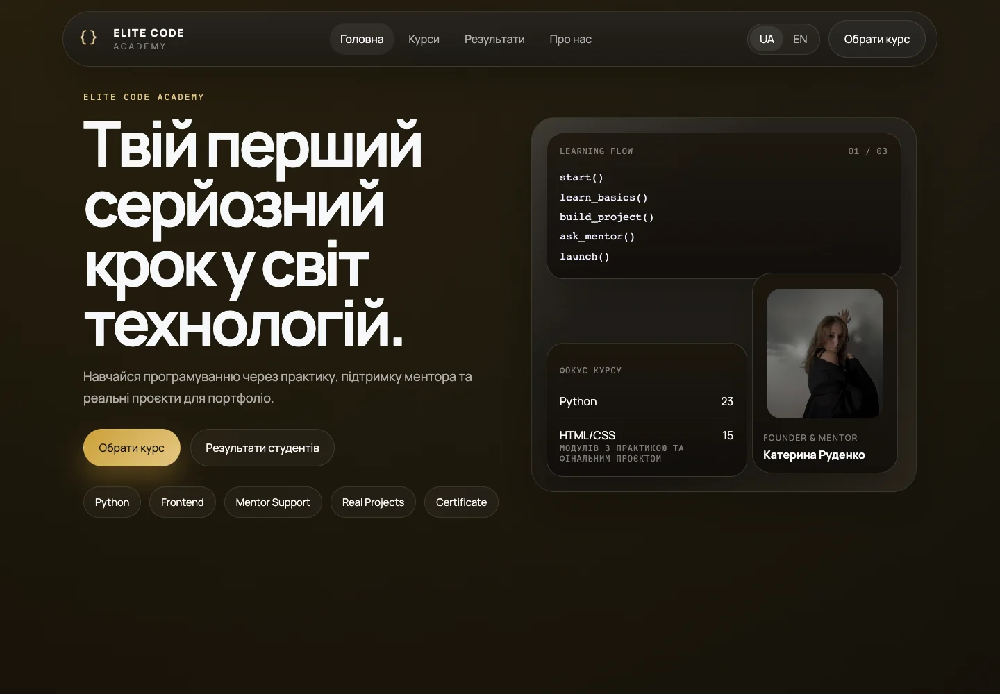
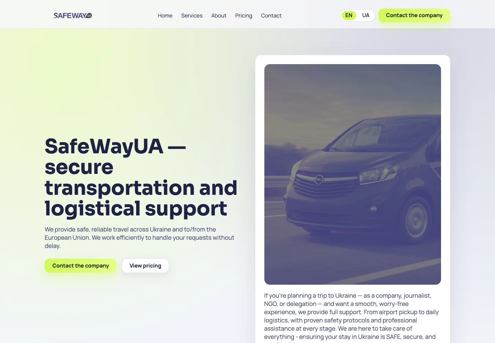
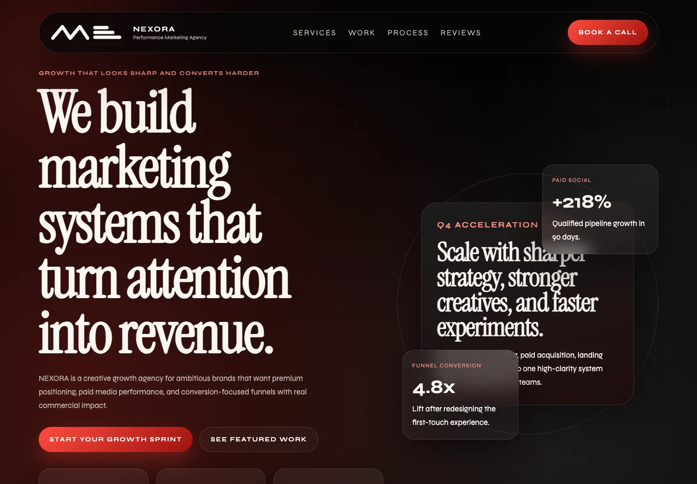

Навчання програмуванню з чітким шляхом від знайомства до вибору курсу.
Незалежна digital-студія
Сайти для бізнесу з амбіціями
Сильний бізнес.
Сильний сайт.
Створюємо сайти, що передають цінність вашого бізнесу й ведуть клієнта до дії. Від структури та дизайну — до розробки й запуску.


Дизайн із характером. Розробка з логікою.
↓01 / Вибрані роботи
Роботи говорять.
Різні бізнеси. Різні задачі. Увага до кожного рішення.

Презентація послуг для тих, хто шукає надійні транспортні рішення.

Сайт маркетингової агенції з виразною візуальною подачею.
Сайт агенції з фокусом на послугах і знайомстві з брендом.
02 / Підхід Fata
Ваша цінність. Зрозумілою цифровою мовою.
Сайт має пояснювати, чому обирають саме вас. Ми поєднуємо зміст, дизайн і технології в єдину систему — щоб знайомство з бізнесом природно переходило в звернення.
Зміст перед декором
Починаємо з вашої пропозиції та запитань клієнтів. На цій основі будуємо структуру.
Один цілісний процес
Структура, дизайн, адаптивна розробка й запуск — в одному робочому процесі.
Увага до реального досвіду
Зручна навігація, читабельний контент і зрозумілий наступний крок на кожному екрані.
Детальніше про роботу / Elite Code
Складне стає зрозумілим.
На сайті академії програмування знайомство з навчанням починається з головного: напрямів, практики та підтримки ментора. Структура допомагає перейти до вибору курсу.
Відкрити сайт03 / Процес
Від задачі до запуску.
Послідовно. Прозоро. З увагою до деталей на кожному етапі.
Знайомство
Обговорюємо бізнес, аудиторію, цілі та обсяг роботи.
Структура
Визначаємо зміст, порядок сторінок і шлях до звернення.
Дизайн
Створюємо візуальну концепцію та інтерфейс для різних екранів.
Розробка
Втілюємо дизайн і підключаємо узгоджені канали для заявок.
Запуск
Перевіряємо сайт, підключаємо домен і хостинг, готуємо до публікації.
Лендінги та сайти-візитки
Для запуску послуги, презентації продукту чи особистого бренду. Один послідовний шлях до заявки.
Багатосторінкові сайти
Коли потрібно розкрити кілька напрямів, показати кейси, послуги та ціни на окремих сторінках.
Логотип і фірмовий стиль
Логотип, кольори та типографіка як частина розробки сайту. Доступно лише разом із замовленням сайту.
Автоматизація та CRM
Передача заявок у Telegram, Google Таблиці, на пошту або в CRM. Без інтернет-магазинів і кошиків.
Наступний крок
Ваш наступний проєкт починається з розмови.
Розкажіть про свій бізнес і задачу. Обговоримо формат сайту, обсяг роботи та наступні кроки.
Обговорити проєктНапишіть нам у Telegram